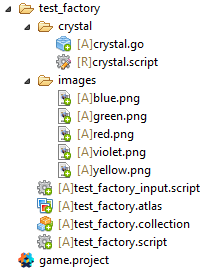

Игрофой объект являющийся прототипом для фабрики
 |
Файл скрипта для игрового объекта позволяет выбрать текстуру при инициализации crystal.script go.property("color", hash("none")) function init(self) if self.color ~= nil then msg.post("#sprite", "play_animation", { id = self.color}) else msg.post("#sprite", "disable", { id = self.color}) end end Логика заключается в следующем: 1. Фокус вешается на общую сцену отображения игрового поля 2. При создании объектов игрового поля они помещаются массив соответственно своим координатам. 3. Чтобы получить объект на котором произошло событие нажатие нужно осуществить поиск объекта в массиве по координатам мыши в момент нажатия. local colors = { hash("blue"), hash("green"), hash("red"), hash("violet"), hash("yellow") } local boardwidth = 7 -- Количество колонок local boardheight = 7 -- Количество строк local blocksize = 80 -- Расстояние между центрами блоков local edge = 40 -- Левый и правый край local bottom_edge = 50 -- Нижний край -- Инициализация function init(self) self.board = {} -- Содержит структуру доски self.blocks = {} -- Список всех блоков. Используется для легкой фильтрации по выбору.
msg.post(".", "acquire_input_focus") msg.post("#", "start_level") end -- Составим список блоков в 1 размерности для простоты фильтрации local function build_blocklist(self) self.blocks = {} for x, l in pairs(self.board) do for y, b in pairs(self.board[x]) do table.insert(self.blocks, { id = b.id, color = b.color, x = b.x, y = b.y }) end end end local function build_board(self) math.randomseed(os.time()) local pos = vmath.vector3() local c local x = 0 local y = 0 for x = 0,boardwidth-1 do
pos.x = edge + blocksize / 2 + blocksize * x self.board[x] = {}
for y = 0,boardheight-1 do pos.y = bottom_edge + blocksize / 2 + blocksize * y pos.z = 0.1 c = colors[math.random(#colors)] -- Выбираем цвет local id = factory.create("#crystal_factory", pos, null, { color = c }) self.board[x][y] = { id = id, color = c, x = x, y = y } end end -- Построить 1дн список, который мы можем легко фильтровать.. build_blocklist(self) end function on_message(self, message_id, message, sender) if message_id == hash("start_level") then build_board(self) end end function on_input(self, action_id, action) if action_id == hash("touch") and action.value == 1 then local x = math.floor((action.x - edge) / blocksize) local y = math.floor((action.y - edge) / blocksize)
if x < 0 or x >= boardwidth or y < 0 or y >= boardheight or self.board[x][y] == nil then -- за пределами доски. return end
if action.pressed then -- событие нажатия print(self.board[x][y].id) end
end end |
Created with the Personal Edition of HelpNDoc: Create iPhone web-based documentation